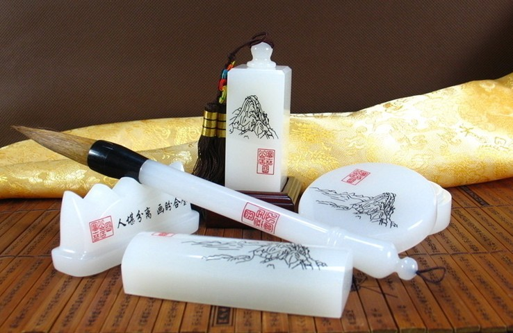
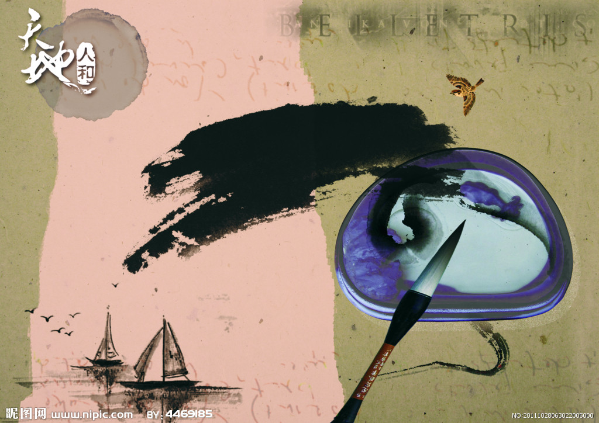
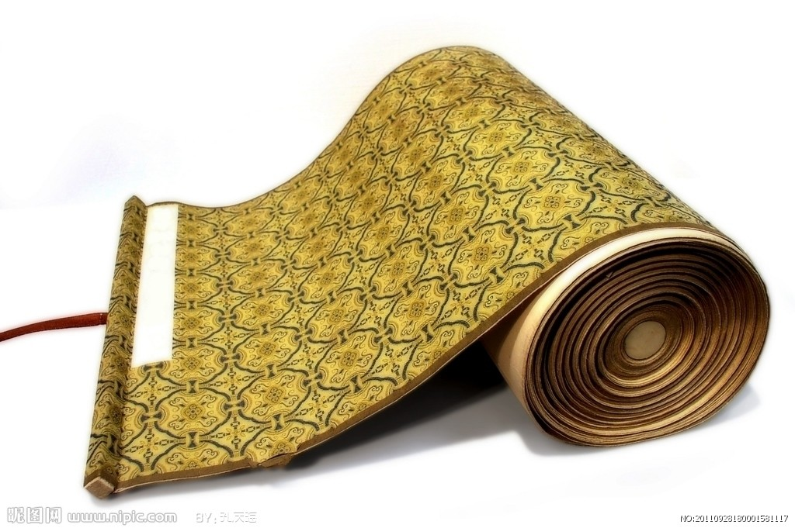

宣纸宣纸是中国传统的古典书画用纸，是汉族传统造纸工艺之一。宣纸“始于唐代、产于泾县”，因唐代泾县隶属宣州府管辖，故因地得名宣纸，迄今已有1500余年历史。2002年安徽宣城泾县被国家确定为宣纸原产地域。按纸张洇墨程度分为生宣、半熟宣和熟宣。熟宣是采用特种再加工技术形成更多花色品种的加工宣纸，主要分蜡宣、 矾宣、色宣、色矾宣等百余种。书法和写意画用生宣，工笔画用熟宣。按原料配比分为棉料、净皮、特种净皮三大类。规格按大小有四尺、五尺、六尺、七尺金榜、尺八屏、八尺、丈二、丈六；按丝路有单丝路、双丝路、罗纹、龟纹等。宣纸制品有素白册页、印谱、信笺和仿古对联等等。 |

宣笔宣笔产于安徽泾县(原属宁国府，产纸以府治宣城为名，故称“宣笔”)，是中国四大名笔之一。据韩愈《毛颖传》记载公元前二三年，秦将军蒙恬南下时途经中山（安徽省泾县一带山区）发现这里兔肥毫长，便以竹为管，在原始的竹笔基础上制成改良毛笔。盛行于唐、宋，均有制笔名手。元代以后湖笔渐兴，宣笔渐衰。改革开放后，宣笔渐渐恢复了生机。 2008年，宣笔制作技艺被列入国家级非物质文化遗产名录。 |

徽墨徽墨，即徽州墨（以江南古徽州的休宁、歙县、婺源(今江西婺源）三地为徽墨制造中心，且历代名家辈出，如曹素功、汪节庵、胡开文、詹云鹏、查森山、程君房等均系古徽州制墨名家）。徽墨是中国汉族制墨技艺中的珍品，也是闻名中外的“文房四宝”之一。因产于古徽州府而得名。徽州制墨的肇始时间当不迟于唐，它是书画家至爱至赖的信物。古人曾云：“有佳墨者，犹如名将之有良马也。” |

宣砚历史上，宣城产的砚台久负盛名。宣城制作砚台的历史在汉代就已经开始了，到了唐代宣砚已经风靡全国，成为当时著名的砚台之一。宣砚闻名遐迩的突出特点集中表现在它温润如玉、涩不留笔、发墨光润。古代宣砚的生产地点在旌德县白地镇洪川村，今天当地仍可看到古老的采石坑遗址。 2014年6月19日，“中国宣砚之乡”荣誉称号授牌仪式举行；5月9日，中国文房四宝协会授予旌德县“中国宣砚之乡”文房四宝特色区域荣誉称号。 |